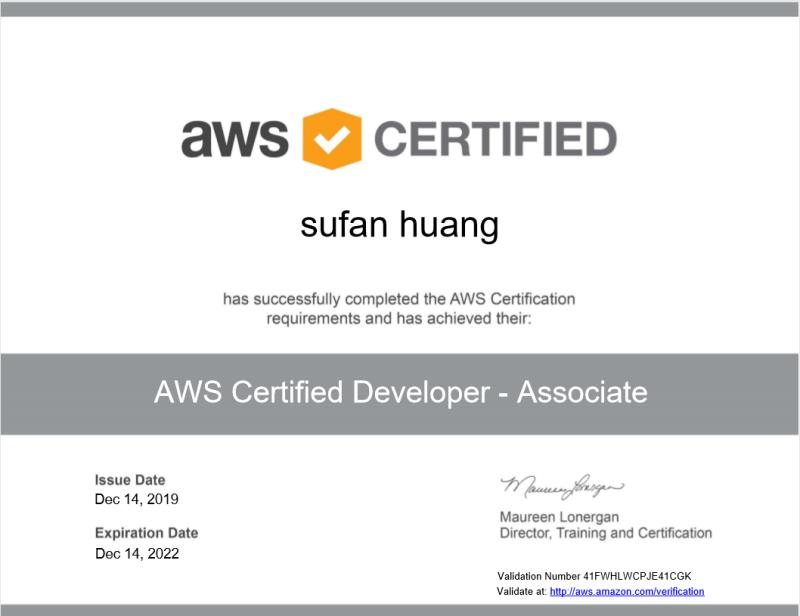

I passed AWS Certified Developer Associate Exam
If studying for Solution Architect exam is like surfing on the big wide ocean, studying for Developer exam is like
diving into certain area.
I guess I dived deep enough that AWS gives me a badge the first time I try.

Here are the AWS servives that I've dived deep:
- S3: security, encrypt data at rest/transit, serves with other products, etc.
- IAM: IAM role and access, IAM user and permission, etc.
- Cognito: security, lambda trigger, authentication, etc.
- Cloudfront: clourdfront with S3/Lambda@edge, security, etc.
- Cloudformation: template reference, template elements, etc.
- Lambda: function invocation, function analysis using cloudwatch, etc.
- Cloudwatch: metrics, alarms, etc.
- API Gateway: integration request/response, method request/response, model, etc.
- X-Ray: integrating with EC2, Elastic Beanstalk, Lambda, etc.
- DynamoDB: dynamodb with Lambda/Kinesis stream, write/read throughput, local secondary index,
global secondary index, DAX, security, etc.
- KMS: KMS with S3/ DynamoDB, customer master keys, etc.
- SQS: SQS with EC2/Lambda, Dead-letter queues, etc.
- SNS: with Lambda/ SQS/ HTTPs endpoint, security, etc.
- Kinesis:Kinesis stream with Lambda/ S3/ DynamoDB, firehose, etc.
- Elastic BeanStalk: security, managing/configuring environment(create, update, terminate environment,)
managing application(version, soucebundle,tags), using with Lambda( usage of library)
- CodeCommit: version control service, commits, branches, migrate to CodeCommit, etc.
- CodeDeploy: deployment configuration, with Lambda/EC2/ECS, etc.
- CodePipeline: Continues Deployment, etc
- CodeStar:orchestrate whole software development flows with templates, etc.
- Secret Manager: usage with lambda / database credential, etc.
Study resources:
- AWS documentation of each service
- AWS FAQ of each service
- Hands on projects(serverless)
- Whizlab practice tests.